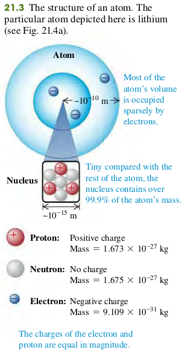

2101 Electric Charge
Two positive charges or two negative charges repel each other. A positive charge and a negative charge attract each other.
Electric charge and the structure of Matter
The structure of atoms can be described in terms of three particles: the negatively charged electron, the positively charged proton, and the uncharged neutron (Fig. 21.3).

Mass of electron
Mass of proton
Mass of neutron
Electric charge is conserved
- The algebraic sum of all the electric charges in any closed system is constant.
- The magnitude of charge of the electron or proton is a natural unit of charge.
Exercises
None